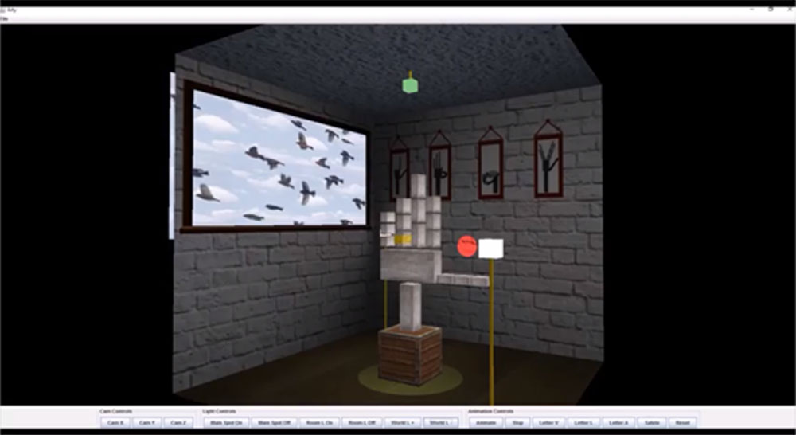
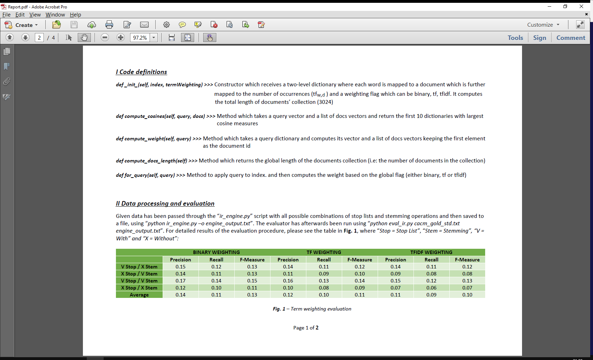
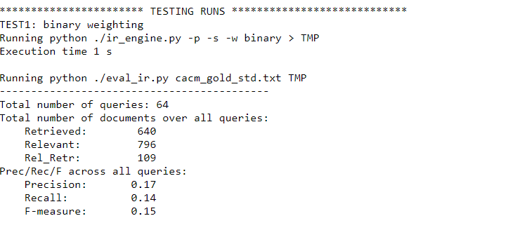
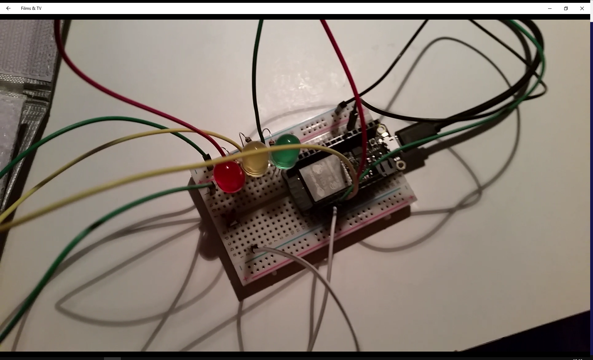
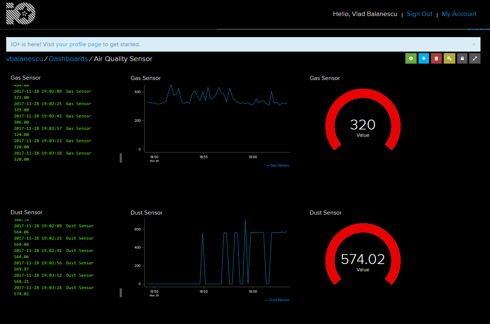
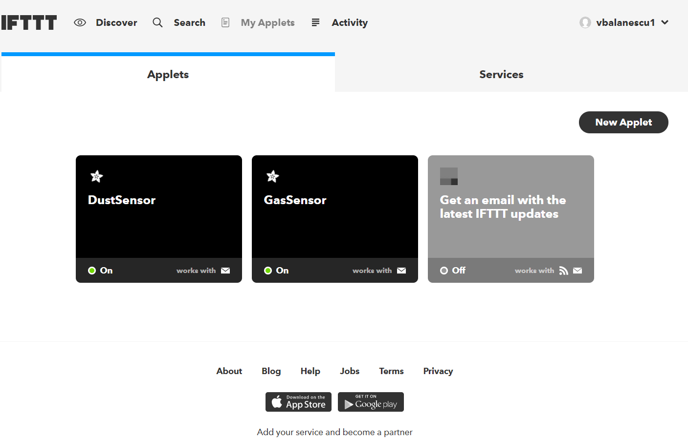
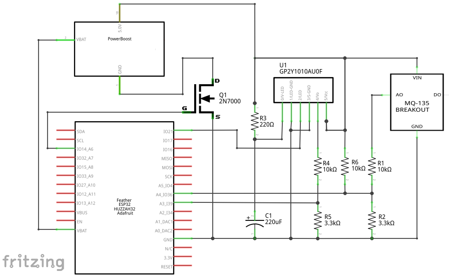
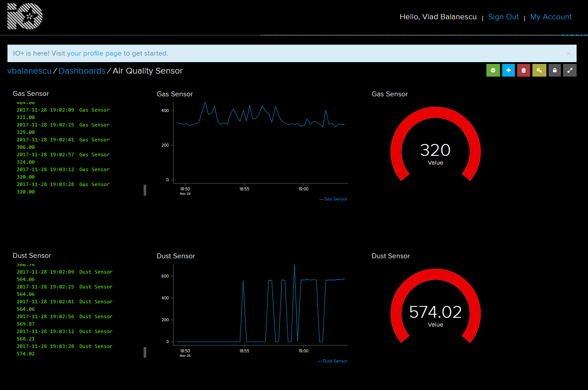
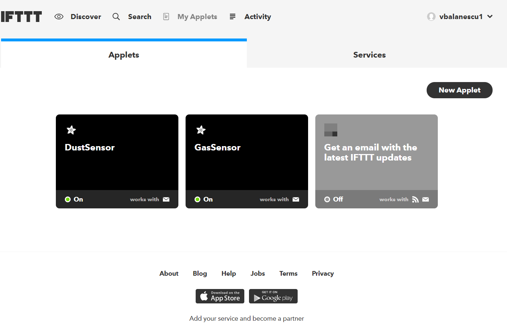
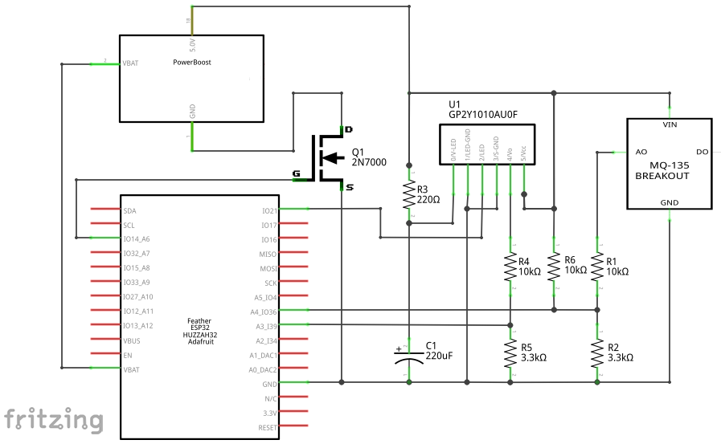

4th Year Projects
-
Technology used: Emotiv Epoc+, Python, Java Swing
-
Dissertation - Measuring Programmers Confusion with EEG SensorsAn interesting yet very challenging dissertation project in which a programmer confusion is studied in a controlled environment (i.e. laboratory). The purpose of this study is first of all to understand why and how the programmers get confused, by asking a group of 10 subject to take part in a programming survey during which their brain oscillations are recorded using Emotiv EPOC+ neuroheadset. Secondly, a confused programmer while then be aided by a confusion indicator which will be a Java Swing application. When alarming confusion levels are detected, the programmer using the plugin will be asked to stop coding.

-
Technologies used: Java, OpenGL
-
ArtyMy first 3D graphics experience and hence my first project built using OpenGL Java Api. This was a very enjoying and fun project to work at during my fourth year. I created a robot hand which spelled 3 letters of my name followed by a salute in american sign language. The scene was presented as an art gallery, with multiple point and directional lights. It also included 2 spotlights; a static and a dynamic one. More, the scene outside the room was visible through the window inside the art gallery. Click the image for a demo!


-
Technology used: Python
-
IR SystemA very tidious and scientific project was the Information Retrieval system. I had to implement the core of such a system which processed a collection of text documents and then performed a classic query search against all 3024 documents. The result consisted in the best 10 matching documents for each of the 64 queries. More, the system was evaluated against a gold standard, and the highest scores I managed to obtain were 0.2 Precission with 0.17 Recall and 0.18 F-measure.

-
Technologies used: ESP32 Feather, Arduino
-
Traffic LightsA traffic lights indicator that I built using the ESP32 Feather MCU and a standard breadboard. It is believed that IoT is the current direction technology nowadays is heading towards, hence I was tasked with several projects involving such a small and powerful device. In this particular example, I just built a simple traffic lights indicator which was actioned by a small switch button. Click the image for a demo!
 





-
Technology used: ESP32 Feather, Arduino
-
Air quality monitorThis project was a little bit more advanced than the previous one. It involved 2 analog sensors, a dust particles detector one and a gas one, more precissely, MQ135 and SHARP GP2Y1010. These were able to detect the smallest change in the environment and log the information into Adafruit.Io. More, IFTTT was then used to process the changes in Adafruit, hence whenever a sensor' value was going over or under a set threshold, an email was sent by the cloud service.